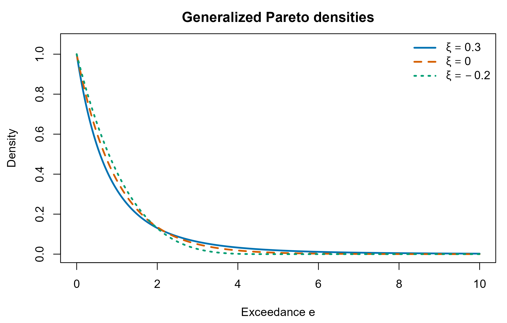
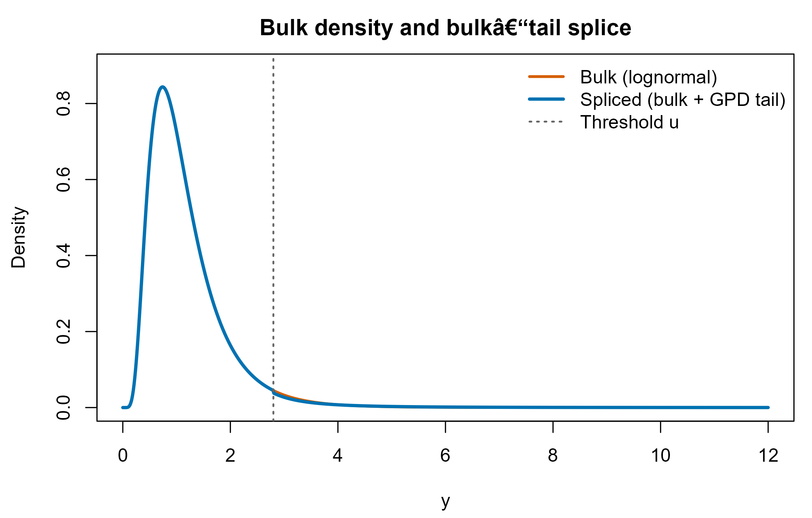

CausalMixGPD is an R package for Bayesian modeling of outcomes whose central distribution can be complex while the upper tail may be heavy and scientifically consequential. In many applications, the modeling challenge is not only to fit the bulk well, but also to obtain stable inference for extreme quantiles and exceedance probabilities. CausalMixGPD addresses this by combining a Dirichlet process mixture (DPM) model for the bulk with an optional peaks-over-threshold generalized Pareto distribution (GPD) tail in a single coherent likelihood, so uncertainty is propagated from fitting through to tail-relevant summaries.
There is a mature R ecosystem supporting Bayesian nonparametric mixture modeling and DP-based regression. The package dirichletprocess provides Dirichlet process objects that can be used as building blocks for density estimation, clustering, and mixture modeling, including stick-breaking representations and user-facing routines that hide most of the MCMC mechanics . For regression-type uses of DP mixtures, PReMiuM implements profile regression models that link responses to covariates through cluster membership under a Dirichlet process mixture, supports multiple response types, and provides prediction and post-processing tools . More broadly, BNPmix implements Pitman-Yor and dependent DP mixture models for density estimation, clustering, and regression, offering a closely related BNP toolkit beyond the standard DP . Additional Bayesian non/semi-parametric regression frameworks that include DP mixture components are available in BNSP , while bayesm includes DP-prior density estimation and DP-based hierarchical models in applied econometric settings . Finally, for penalized regression settings, RcppDPR provides a Dirichlet process regression implementation with both fitting and prediction utilities . These packages are highly effective for learning flexible bulk structure and covariate-driven heterogeneity via mixture modeling.
In parallel, the extreme-value modeling ecosystem in R provides well-established tools for peaks-over-threshold inference. The ismev package implements classical extreme-value methods and diagnostics, including GPD fitting across thresholds and model-checking tools that align closely with standard EVT practice . The texmex package extends this direction by supporting likelihood-based and Bayesian fitting of GPD/GEV models, including covariate effects on tail parameters, which is useful when tail risk varies across subpopulations . For Bayesian extreme-value analysis specifically, evdbayes and revdbayes provide posterior simulation tools for common EVT models and predictive summaries for extremes . These EVT-focused packages are natural choices when the scientific question is primarily about the tail, while the bulk is treated parametrically or as a secondary modeling target.
CausalMixGPD is designed to connect these two perspectives in a single Bayesian model: it uses a DPM to learn the bulk flexibly, and when GPD = TRUE it uses an explicit bulk–tail splice so that exceedances are governed by a GPD tail rather than by the incidental tail behavior of the bulk kernel. The implementation is built on NIMBLE , which provides a programmable system for compiling Bayesian models and running MCMC, including dedicated machinery for BNP mixture representations such as CRP and stick-breaking formulations . In addition to one-sample modeling, CausalMixGPD exposes the same distributional modeling strategy within a two-arm causal interface so that causal estimands—both mean-scale and quantile-scale, including extreme quantiles—can be derived from arm-specific posterior predictive distributions.
At the central part of the data this package employs Dirichlet process mixtures, which is a standard Bayesian nonparametric tool for flexible density estimation and regression, especially when the bulk distribution is skewed, clustered, multimodal, or otherwise poorly described by a single parametric family (Ferguson 1973; Escobar and West 1995; Neal 2000). However, when inference targets lie far in the upper tail—very high quantiles, tail probabilities, or return-level type summaries—purely bulk-driven models can be fragile because tail extrapolation is dominated by kernel choice and by how the mixture prior behaves where there are few observations.
For tail estimation this package uses the peaks-over-threshold framework. This framework suggests exceedances above a sufficiently high threshold converge to a GPD under broad conditions (Balkema and Haan 1974; Pickands 1975), with applied guidance in (Davison and Smith 1990; Coles 2001). Bulk–tail splicing combines these viewpoints so that the bulk is modeled flexibly while tail extrapolation uses POT theory. Bayesian approaches with a similar bulk–tail spirit appear, for example, in Bayesian analysis with threshold estimation and predictive summaries (Behrens et al. 2004) and in semiparametric Bayesian density estimation for extremes (Nascimento et al. 2012), while smooth-transition perspectives motivate alternatives to a fixed hard threshold (Frigessi et al. 2002).
CausalMixGPD operationalizes these ideas in software with an emphasis
on NIMBLE-based model specification and MCMC execution (devalpine2017nimble?).
Concretely, CausalMixGPD generates NIMBLE models for Dirichlet process
mixtures using either (i) a Chinese restaurant process (CRP)
representation or (ii) a truncated stick-breaking (SB) representation,
and then relies on NIMBLE’s MCMC engine and BNP samplers. The primary
NIMBLE references that document these components are the Bayesian nonparametrics
chapter of the NIMBLE manual, the dCRP
documentation, the stick_breaking
documentation, the BNP density
estimation example, and the sampler notes for
CRP-specific MCMC behavior.
Dirichlet process mixtures: model and computational representations
The DPM model
A Dirichlet process mixture defines a flexible density by mixing a kernel (k()) over a random mixing distribution (G). For independent observations (y_1,,y_n), [ y_i _i k(y_i _i), _i G G, G (, G_0),] where (G_0) is a base measure and (>0) is the concentration parameter (Ferguson 1973). Marginally, this implies a mixture model with a potentially unbounded number of components. Under Sethuraman’s constructive representation (Sethuraman 1994), [ f_{}(y) ;=; _{j=1}^{} w_j,k(y_j),] where (_j G_0) and ({w_j}) are stick-breaking weights. For posterior computation, it is common to introduce allocation indicators (z_i) and to work either with a partition representation (CRP) or an explicit weight representation (stick-breaking).
CausalMixGPD supports both representations because they provide different computational trade-offs and because NIMBLE provides dedicated support for each.
CRP formulation (partition view) and NIMBLE implementation
The CRP formulation works directly with the induced partition distribution from a DP prior (Blackwell and MacQueen 1973; Neal 2000). After introducing allocations (z_i) with (y_i z_i k(y_i _{z_i})), the DP prior implies the predictive rule [ (z_i = k z_{1:(i-1)}) = , (z_i = z_{1:(i-1)}) = ,] where (n_k) is the number of observations already assigned to cluster (k). This representation highlights the self-reinforcing clustering behavior of the DP: existing clusters tend to be reused, but new clusters are created with probability proportional to (). The parameter () therefore governs the expected granularity of the mixture fit, with larger () encouraging more clusters a priori.
In NIMBLE, the CRP is implemented via the dCRP
distribution, where the allocation vector itself is a stochastic node. A
schematic NIMBLE specification for a DPM density model takes the
following form.
# NIMBLE schematic (CRP representation)
z[1:n] ~ dCRP(conc = alpha, size = n) # CRP prior on allocations (size typically set to n)
for(j in 1:n) theta[j] ~ G0(...) # component parameters, up to n potential clusters
for(i in 1:n) y[i] ~ dKERNEL(theta = theta[z[i]], ...)
alpha ~ prior_for_alpha(...)The “size†argument supplies an upper bound for the cluster labels
that can appear in z; using size = n is the
standard choice for (n) observations. Although the DP mixture is
infinite-dimensional in principle, the realized partition uses only
finitely many clusters for finite (n), and the posterior number of
occupied clusters is learned from the data.
From the MCMC standpoint, NIMBLE recognizes CRP nodes and assigns
specialized samplers that update the allocation vector sequentially. The
samplers documentation notes that CRP sampling is designed
specifically for Dirichlet process mixture models and that NIMBLE may
choose between different internal strategies depending on conjugacy and
model structure. The practical implication for CausalMixGPD is that
backend = "crp" uses an allocation-based formulation that
avoids an explicit truncation level while still benefiting from a
sampler tailored to CRP structure.
Stick-breaking formulation (weights view) and NIMBLE implementation
The stick-breaking representation constructs the mixture weights explicitly (Sethuraman 1994). One draws break proportions (v_j) and defines weights via [ v_j (1,), w_1 = v_1, w_j = v_j {<j}(1 - v),j.] For computation, one commonly truncates the infinite mixture to a finite level (L), which yields a blocked approximation and a finite categorical allocation model (Ishwaran and James 2001): [ z_i (w_1,,w_L), y_i z_i k(y_i _{z_i}).] The approximation quality depends on (L): larger (L) increases flexibility but raises computational cost.
NIMBLE supports this formulation through the deterministic
stick_breaking function, which maps a vector of break
proportions into a simplex of weights. A schematic NIMBLE specification
is:
# NIMBLE schematic (truncated stick-breaking representation)
for(j in 1:(L-1)) v[j] ~ dbeta(1, alpha)
w[1:L] <- stick_breaking(v[1:(L-1)]) # simplex weights summing to one
for(j in 1:L) theta[j] ~ G0(...)
for(i in 1:n) {
z[i] ~ dcat(w[1:L])
y[i] ~ dKERNEL(theta = theta[z[i]], ...)
}
alpha ~ prior_for_alpha(...)In CausalMixGPD, backend = "sb" uses this representation
and exposes components = L as the truncation level. In
applications, (L) is typically chosen to be larger than the posterior
expected number of occupied components so that truncation is not a
substantive modeling constraint but rather a computational device.
Generalized Pareto tails: peaks over threshold
Definition and interpretation
Let (u) be a threshold and define exceedances (e = y-u) for observations with (y>u). The generalized Pareto distribution has CDF [ G(e,) ;=; 1 - (1 + ,)^{-1/}, e , >0,] with the () limit corresponding to an exponential tail. The density (for ()) is [ g(e,) ;=; (1 + ,)^{-1/- 1}, e ,] with the support restriction (1+e/>0) when (<0). The shape parameter () controls tail heaviness: larger () produces heavier tails, while negative () implies a finite upper endpoint.
The justification for using a GPD to model exceedances above a high threshold is provided by POT limit theory (Balkema and Haan 1974; Pickands 1975), with practical modeling discussion in (Davison and Smith 1990; Coles 2001).
GPD density illustration
The following plot visualizes how the shape parameter changes tail behavior. We set (u=0) for simplicity so that the horizontal axis is the exceedance scale.
dgpd_simple <- function(e, sigma, xi) {
stopifnot(all(e >= 0), sigma > 0)
if (abs(xi) < 1e-10) return((1 / sigma) * exp(-e / sigma))
ok <- (1 + xi * e / sigma) > 0
out <- numeric(length(e))
out[!ok] <- 0
out[ok] <- (1 / sigma) * (1 + xi * e[ok] / sigma)^(-1/xi - 1)
out
}
cols <- c("#0072B2", "#D55E00", "#009E73")
e <- seq(0, 10, length.out = 600)
y1 <- dgpd_simple(e, sigma = 1, xi = 0.30)
y2 <- dgpd_simple(e, sigma = 1, xi = 0.00)
y3 <- dgpd_simple(e, sigma = 1, xi = -0.20)
ylim <- c(0, max(y1, y2, y3) * 1.06)
op <- par(mar = c(4.3, 4.3, 2.4, 0.8))
plot(e, y1, type = "l", lwd = 2.4, col = cols[1], ylim = ylim,
xlab = "Exceedance e", ylab = "Density",
main = "Generalized Pareto densities")
lines(e, y2, lwd = 2.4, col = cols[2], lty = 2)
lines(e, y3, lwd = 2.4, col = cols[3], lty = 3)
legend("topright",
legend = c(expression(xi==0.30), expression(xi==0.00), expression(xi==-0.20)),
col = cols, lty = c(1, 2, 3), lwd = 2.4, bty = "n")
par(op)Splicing the bulk and the tail into one proper distribution
Spliced CDF and density
Let (F_{}) and (f_{}) denote the bulk CDF and density. A standard bulk–tail splice defines a full-distribution CDF by [ F(y)= ] which is continuous at (u) and has the correct total mass. Differentiation yields the spliced density [ f(y)= ] The factor (1-F_{}(u)) ensures that the tail density integrates to the bulk survival probability at the threshold, so the overall density integrates to one. CausalMixGPD uses a DPM for (f_{}) and a GPD for (g), and supports fixed thresholds, random thresholds with priors, and covariate-dependent thresholds in conditional settings. In the causal interface, the splice can be fit separately in each treatment arm so that both bulk structure and tail heaviness can differ across arms.
Spliced density illustration
The next plot illustrates the splice by comparing a lognormal bulk density to the corresponding spliced density. The two curves coincide below (u) by construction; the distinction appears above the threshold where the GPD tail alters extrapolation.
Fbulk <- function(y, mu, sd) plnorm(y, meanlog = mu, sdlog = sd)
fbulk <- function(y, mu, sd) dlnorm(y, meanlog = mu, sdlog = sd)
u <- 2.8
mu <- 0.0
sd <- 0.55
sigma_t <- 0.8
xi_t <- 0.45 # heavier tail to make the splice visually distinct
fsplice <- function(y) {
y <- pmax(y, 0)
out <- numeric(length(y))
idx_bulk <- y <= u
idx_tail <- y > u
out[idx_bulk] <- fbulk(y[idx_bulk], mu = mu, sd = sd)
out[idx_tail] <- (1 - Fbulk(u, mu = mu, sd = sd)) *
dgpd_simple(y[idx_tail] - u, sigma = sigma_t, xi = xi_t)
out
}
y <- seq(0, 12, length.out = 800)
bulk <- fbulk(y, mu = mu, sd = sd)
spliced <- fsplice(y)
ylim <- c(0, max(bulk, spliced) * 1.06)
op <- par(mar = c(4.3, 4.3, 2.4, 0.8))
plot(y, bulk, type = "l", lwd = 2.4, col = cols[2], ylim = ylim,
xlab = "y", ylab = "Density",
main = "Bulk density and bulk–tail splice")
lines(y, spliced, lwd = 2.8, col = cols[1])
abline(v = u, col = "grey40", lty = 3, lwd = 1.6)
legend("topright",
legend = c("Bulk (lognormal)", "Spliced (bulk + GPD tail)", "Threshold u"),
col = c(cols[2], cols[1], "grey40"),
lty = c(1, 1, 3),
lwd = c(2.4, 2.8, 1.6),
bty = "n")
par(op)Kernels included in CausalMixGPD
CausalMixGPD provides a menu of parametric kernels for the bulk (central) distribution. The kernels are chosen to cover both real-valued outcomes and strictly positive outcomes. In the Dirichlet process mixture (DPM) bulk, these kernels are mixed to flexibly represent skewness, multimodality, and other departures from a single parametric shape. When the GPD tail is enabled, the kernel choice should usually be guided by how well it represents the bulk, because tail extrapolation beyond the threshold is driven primarily by the GPD component rather than by the bulk kernel.
Table @ref(tab:kernels-table) summarizes the kernels currently available in the package, along with their supports and parameterizations.
| Kernel | Support | Parameters | Constraints | GPD tail allowed |
|---|---|---|---|---|
| normal | R | mean, sd | mean ∈ R; sd > 0 | Yes |
| laplace | R | location, scale | location ∈ R; scale > 0 | Yes |
| cauchy | R | location, scale | location ∈ R; scale > 0 | No |
| gamma | (0, ∞) | shape, scale | shape > 0; scale > 0 | Yes |
| lognormal | (0, ∞) | meanlog, sdlog | meanlog ∈ R; sdlog > 0 | Yes |
| invgauss | (0, ∞) | mean, shape | mean > 0; shape > 0 | Yes |
| amoroso | (loc, ∞) | loc, scale, shape1, shape2 | loc ∈ R; scale > 0; shape1 > 0; shape2 > 0 | Yes |
For a detailed discussion of how these kernels are used in one-arm and conditional models—including posterior computation for densities and quantiles and posterior predictive inference—see the next vignette.
References
::contentReference[oaicite:0]{index=0}